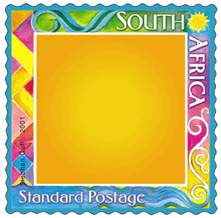
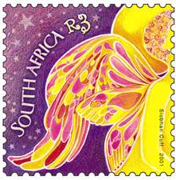

|
Created:
11/21/01. Revised: 01/07/06. |
|
|
|
The South
African Post Office appears to have devised a novel way of exploiting
collectors. I refer to the Christmas 2001 issue, the details of which
can be found at:
http://www.sapo.co.za/Philately/xmas.htm
The set contains just three stamps. But wait ... The R1,40 (is this
now the standardized mail rate?) sports a plain yellow center and
comes with a set of 20 different stickers, designed to fit into
center. The idea is that the user can create his or her own design by
affixing an appropriate sticker. That effectively means 20 different
stamps (or 21 if you count the "blank" stamp which is
presumably still valid for postage). Sneaky.

Now if
this idea spreads to the country which you collect what would you do?
If you collect mint would you purchase just one "blank" or
enough "blanks" to apply all possible stickers? If you
collect used would you patiently try to obtain all possible designs?
Then there is the issue of sticker orientation. And what is to
distinguish between the stickers produced by the Post Office (which
presumably have no postal value) and any other sticker?
Lastly, for SA collectors, any idea when the SAPO will relent with the
gaudy colors and ugly designs? They almost all look like bad airbrush
paintings and use terrible combinations of saturated colors. Too
much!
David
For the
anti SNA people, only the lack of an "N" in SA and SAPO;
separates this from our parodies of the philatelic landscape! That,
and the fact that SNA "stamps" are definitely NOT ugly!
One of our (SNA's) reasons for the use of satire, farce and parody is
to point out the ridiculous actions of many of those
"connected" to the hobby!
David's
posting represents prima facie evidence that this effort is both
needed and important!
Neil of SNA!
Now, if somebody has the impression that these stamps weren't thought with us (stamp collectors) in mind, please read this, taken from the page mentioned above:

"...
these delightful stamps are aimed at the Christmas and youth markets,
but is sure to appeal to collectors and the wider public alike."
Regards, Victor.
Thanks
David for this interesting information ! What a pity ! But many of our
Postal Admin seem to compete each other in 'designing' ugly stamps
(instead of giving work to great artists, like Slania) and making
money, money, money...
In a few years, the only nice stamps in the world may me issued
by a northern Africa country, I am not authorized to name here without
changing the subject of your post ;-)
The French Post Office has also discovered some bad tricks to make a
lot of money (together with issuing 60 % of ugly stamps) :
In November 2000, they issued a stamp (Yvert # 3365) celebrating the
3rd millenary (computer design, "helio" printing,
un-original appearance : an enormous @ over a map of the world and a
cover) ; a Cinderella image saying "Best wishes" was
attached to it. Face value : 3 FF or .46 Euro (i.e. about 1/2 US $)
(the 1st class rate from France to France & Europe).
This stamp also was issued in leaflets of 10 at the same price (3x10 =
30 FF). But they also sold it in a version where the Cinderella
"best wishes" image was replaced by an ID type picture of
the buyer (they had some equipments installed for that purpose at some
stamp shows). The selling price was doubled : 60 FF.
In order to "fill the empty place" in my album, I must
confess that I *had* to buy it ;-)
Pierre Courtiade
Note: All postings were taken from RCSD, Nov. 21 - 22, 2001
Link: The Bright and the Dark Side of Personalized Issues
|
Created:
11/21/01. Revised: 01/07/06. |
|